library(shiny)
ui <- fluidPage(
tags$head(
tags$style(HTML(
"
.greeting-box {
background: linear-gradient(135deg, #667eea 0%, #764ba2 100%);
color: white;
padding: 20px;
border-radius: 10px;
margin-top: 20px;
font-size: 18px;
text-align: center;
box-shadow: 0 4px 6px rgba(0, 0, 0, 0.1);
}
.input-section {
background-color: #f8f9fa;
padding: 15px;
border-left: 4px solid #667eea;
border-radius: 5px;
}
"
))
),
div(
class = "container",
style = "margin-top: 40px;",
h1("✨ Personalised Greeting App", style = "text-align: center;"),
div(
class = "input-section",
textInput("name", "Enter your name:", placeholder = "Type here..."),
p(
"We'll create a custom greeting just for you!",
style = "color: #666; font-style: italic;"
)
),
div(class = "greeting-box", textOutput("greeting"))
)
)
server <- function(input, output, session) {
output$greeting <- renderText({
if (input$name == "") {
"👋 Welcome! Enter your name above."
} else {
paste0("🎉 Hello, ", input$name, "! Welcome to our app!")
}
})
}
shinyApp(ui, server)posit::conf(2026) %>% glimpse()
How Community Creates Opportunity
Dionne Argyropoulos, PhD & Mansi Aggarwal
Introductions
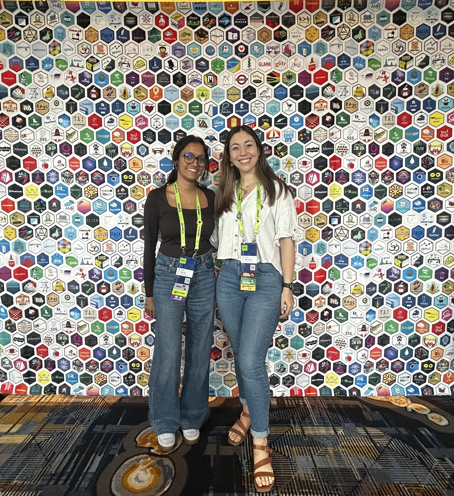
We are Mansi and Dionne, committee members at R-Ladies+ Melbourne
We both attended posit::conf(2026) in Houston, Texas (USA) this September as part of the Opportunity Scholars Program
Today we will discuss our journeys before, during and after the conference!
About Mansi
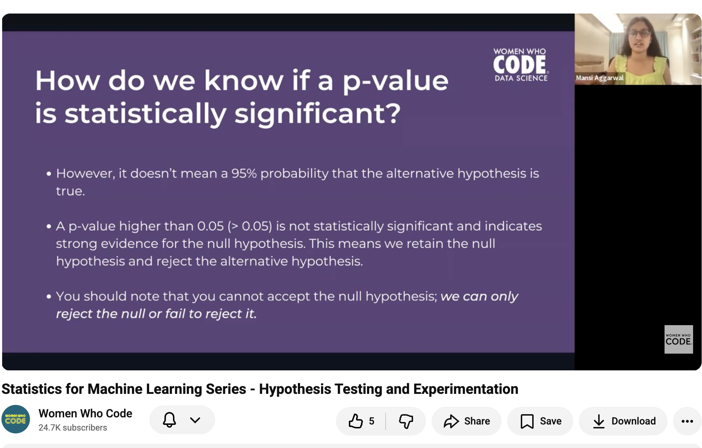
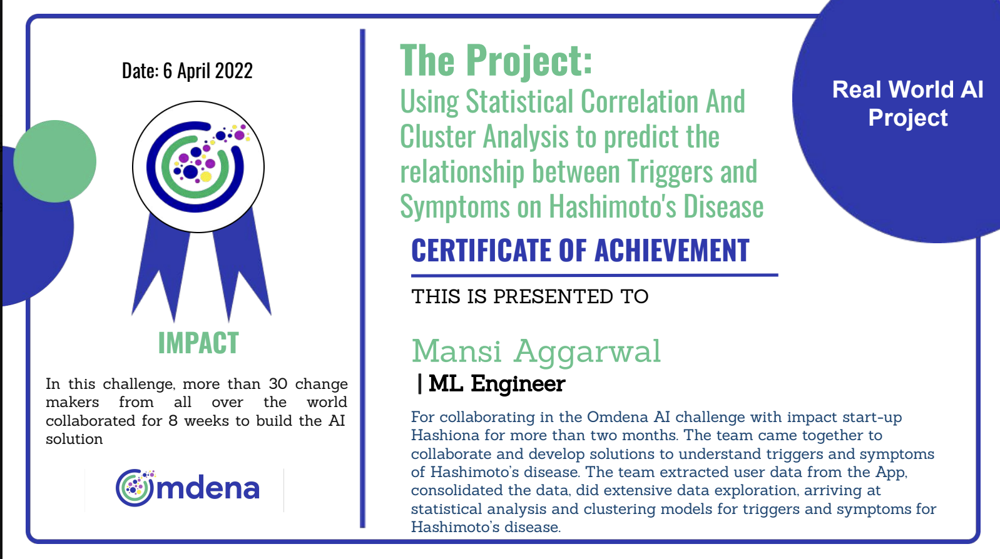
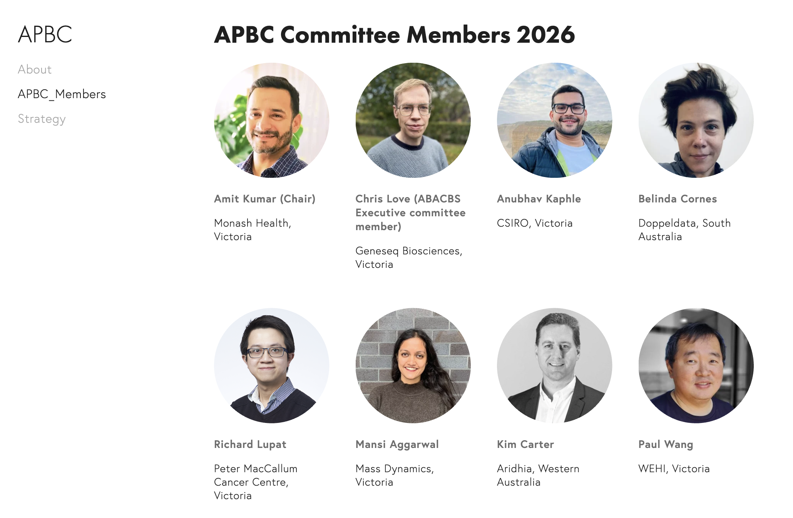
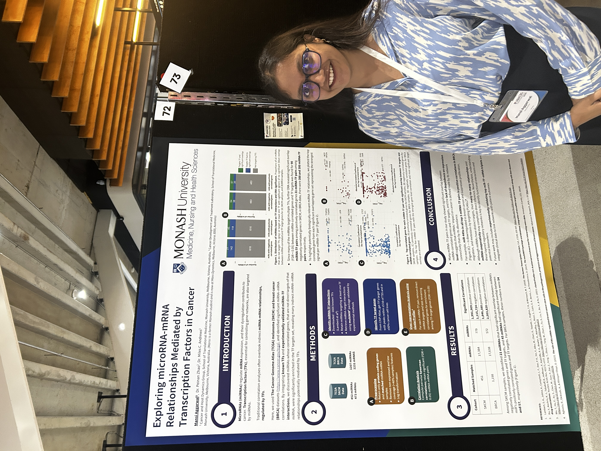
About Dionne
Opportunity Scholars Program
Supported by Posit PBC to fly to Houston for four nights, registration for posit::conf(2026) and a workshop; (optional) for Tidy Dev Day!
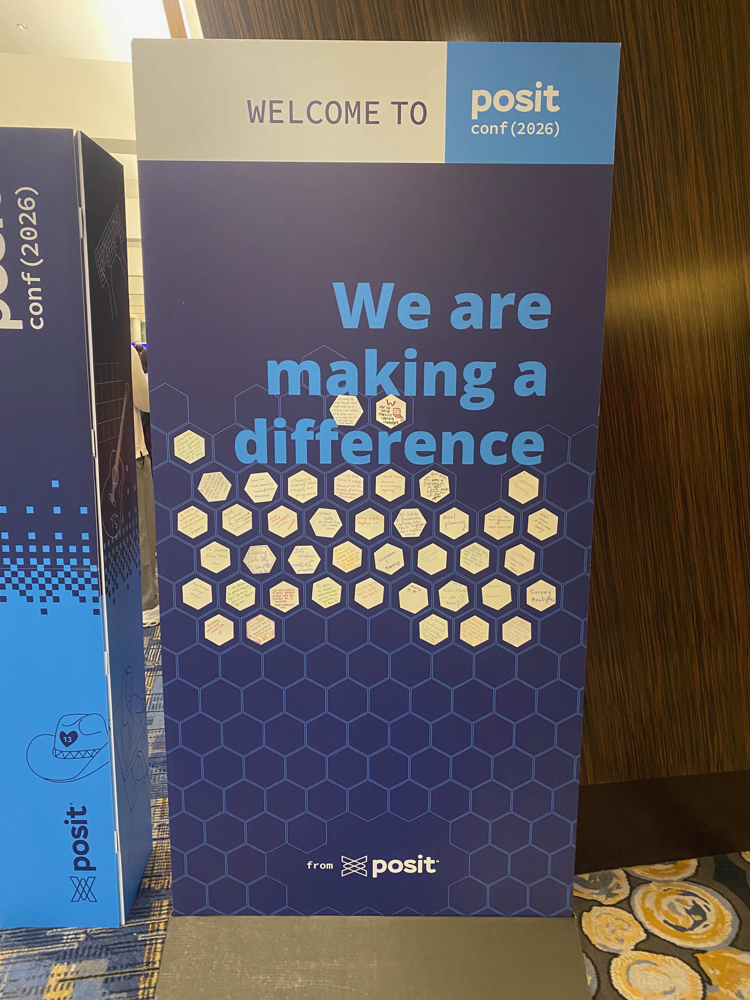

Timeline
Application 📝 Draft and submit application
Decision 🎉 Found out we were successful!
Conference ✈️ Fly to Houston, Texas
posit::conf(2026) %>% glimpse()
Workshop: “The Modern R Workflow”
with Jenny Bryan and Hadley Wickham
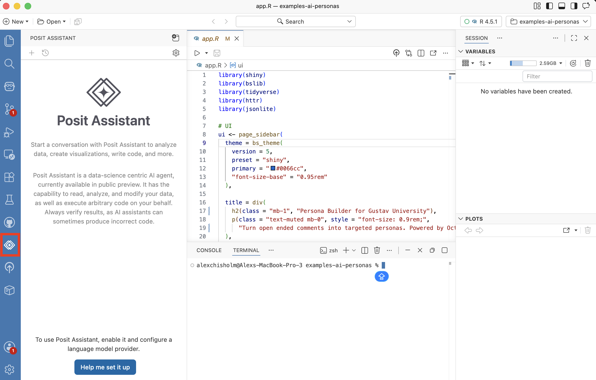
Positron IDE: Built for data exploration, multilingual, workspaces are folders
Posit Assistant AI harness works within IDE, connects to session, can be used with many providers.
Posit AI Pass allow you to access many models through one subscription service
Workshop: “The Modern R Workflow”
with Jenny Bryan and Hadley Wickham
AI/R Tips
💡 /clear conversations regularly
💡 Use AGENT.md to store regular instructions
💡 Ask agent to “talk like a caveman”: succinct and saves tokens
💡 Create skills to avoid common pitfalls
💡 {air} (formatting), {pak} (installing packages), {rig} (multiple R installations)
NEVER MAKE ANOTHER HUMAN READ AI SLOP
Dionne’s Conference Highlights
Session that’s stayed with me: Teaching at the Frontier
with Mine Cetinkaya-Rundel, Marc Dotson, Derrick Cogburn, Christian Martinez
Problem 1:
Teaching how to code in the AI era
Solution:
Teach clear AI best-practices, coding workflow, assess judgement and syntax
Problem 2:
Students learn for a semester, but forget after.
Solution:
Encourage students to reflect, promote active learning through encouragement and feedback
Directly impact my developing pedagogical values as a teacher:
Shifting AI as a shortcut to learning support, and fostering creativity.
New developments that I know will change my life
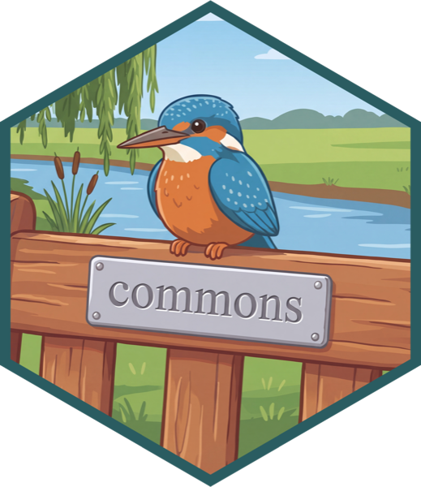
Provide trusted code to help AI systems
Browse React.dev components, use them in Shiny
Shiny in Pieces: {shinyreact}
New developments that I know will change my life
Provide trusted code to help AI systems
Browse React.dev components, use them in Shiny
Including Quarto2, QuartoHub, quarto-revealjs-editable

{mirai}: Async, never wait for a result
{mori}: Shared memory: one copy, many readers
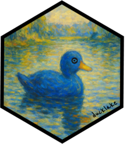
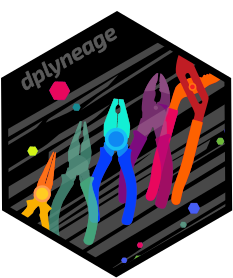
{ducklake}: Database versioning in R
{dplyneage}: Column-level lineage for {dplyr}
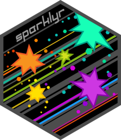
Tune {tidymodels} in Databricks via tune_grid_spark()
Tidy Dev Day
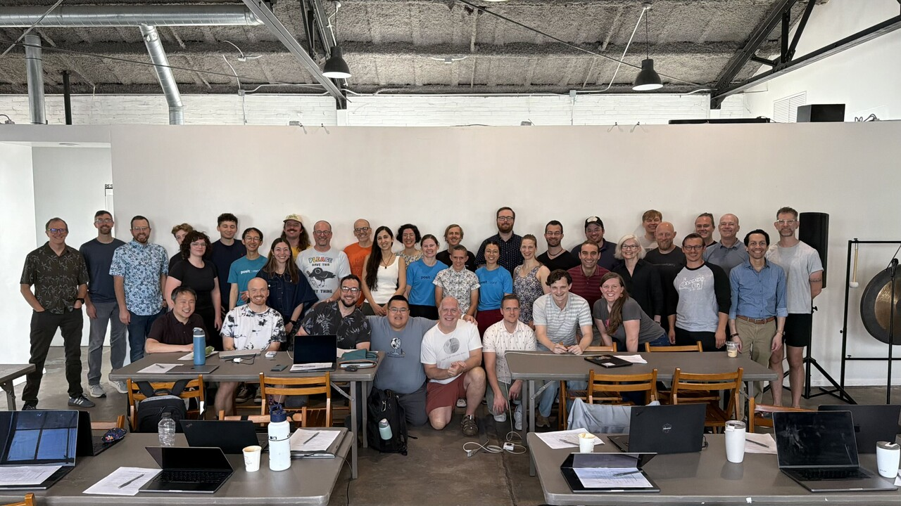
Tidy Dev Day
Worked on tidymodels issues tidymodels#154
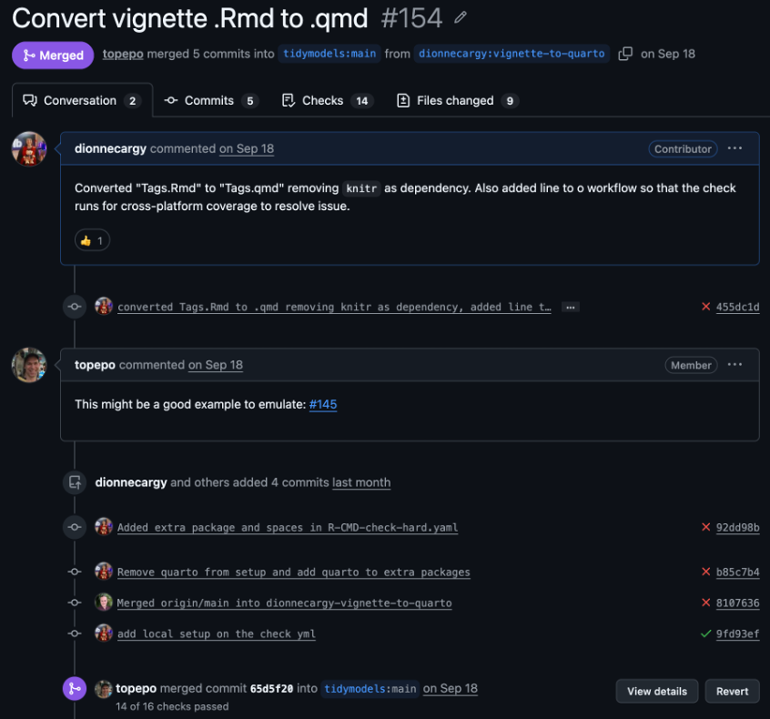
Tidy Dev Day
Worked on tidymodels issues tidymodels/tune#1200
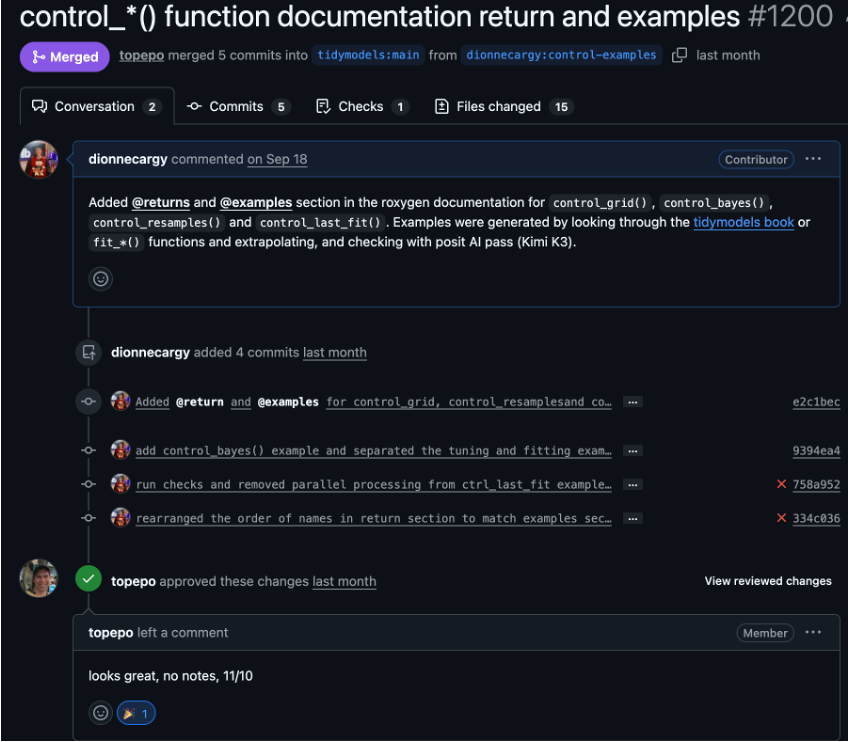
#'
#' @return An S3 object of class `control_grid` (also used for `control_bayes`,
#' `control_resamples`, `control_last_fit`) used to contain the
#' control settings in a grid search as a list.
#'
#' @examples
#'
#' library(recipes)
#' library(rsample)
#' library(parsnip)
#' library(workflows)
#'
#' set.seed(1234)
#'
#' folds <- vfold_cv(mtcars, v = 5)
#'
#' recipe <- recipe(mpg ~ ., data = mtcars) |>
#' step_normalize(all_numeric_predictors())
#'
#' # Model with tuning parameters, used for `tune_grid()` and `tune_bayes()`.
#' spec <- mlp(
#' hidden_units = tune(),
#' penalty = tune()
#' ) |>
#' set_engine("nnet") |>
#' set_mode("regression")
#'
#' wf <- workflow() |>
#' add_model(spec) |>
#' add_recipe(recipe)
#'
#' # ---------------------------------------------------------------------------
#' # control_grid(): Modify tuning process in `tune_grid()`.
#' ctrl <- control_grid(
#' # save out-of-sample predictions
#' save_pred = TRUE,
#' # print progress while tuning
#' verbose = TRUE
#' )
#'
#' tune_grid(
#' wf,
#' resamples = folds,
#' grid = 5,
#' control = ctrl
#' )
#'
#' # ---------------------------------------------------------------------------
#' # control_bayes(): Modify tuning process in `tune_bayes()`.
#' ctrl_bayes <- control_bayes(
#' save_pred = TRUE,
#' verbose = TRUE
#' )
#'
#' set.seed(3246)
#' tune_bayes(
#' wf,
#' resamples = folds,
#' initial = 5,
#' iter = 10,
#' control = ctrl_bayes
#' )
#'
#' # ---------------------------------------------------------------------------
#' # `fit_resamples()` and `last_fit()` can't use `tune()` placeholders, so for
#' # `control_resamples()` and `control_last_fit()` we use a model with fixed
#' # parameters.
#' # ---------------------------------------------------------------------------
#' # control_resamples(): Retain out-of-sample predictions and fitted workflows
#' # in the grid and each fold.
#' spec_fixed <- linear_reg() |>
#' set_engine("lm")
#'
#' wf_fixed <- workflow() |>
#' add_model(spec_fixed) |>
#' add_recipe(recipe)
#'
#' keep_pred <- control_resamples(
#' save_pred = TRUE,
#' save_workflow = TRUE
#' )
#'
#' fit_resamples(
#' wf_fixed,
#' resamples = folds,
#' control = keep_pred
#' )
#'
#' # ---------------------------------------------------------------------------
#' # control_last_fit(): Control last fit process by printing progress.
#' split <- initial_split(mtcars)
#'
#' ctrl_last_fit <- control_last_fit(verbose = TRUE)
#'
#' last_fit(
#' wf_fixed,
#' split = split,
#' control = ctrl_last_fit
#' )I feared my skills will atrophy
But it became clear that the fundamentals will never cease to be important.
Using AI tools with clear intentions and careful scrutiny can help us achieve our goals.
Mansi’s Major Takeaways
- Thinking differently about AI 👩🏽💻
- Consumption vs Creation 🛠️
I have often been an AI skeptic…
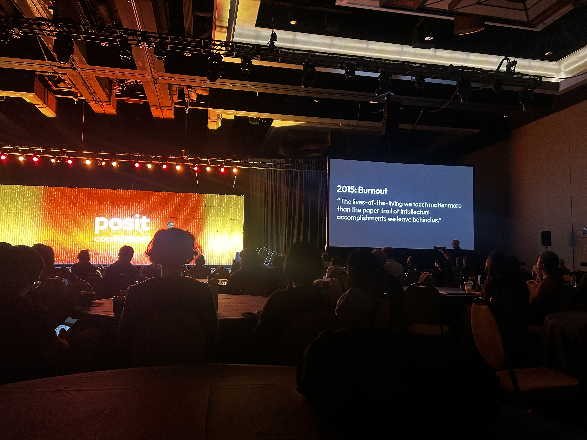
But one thing that stood out across the conference was how thoughtfully people are engaging with AI, not as a replacement for human expertise, but as a tool that can enhance creativity, productivity, communication, teaching, and scientific discovery.
Some standout AI sessions (and learnings!)
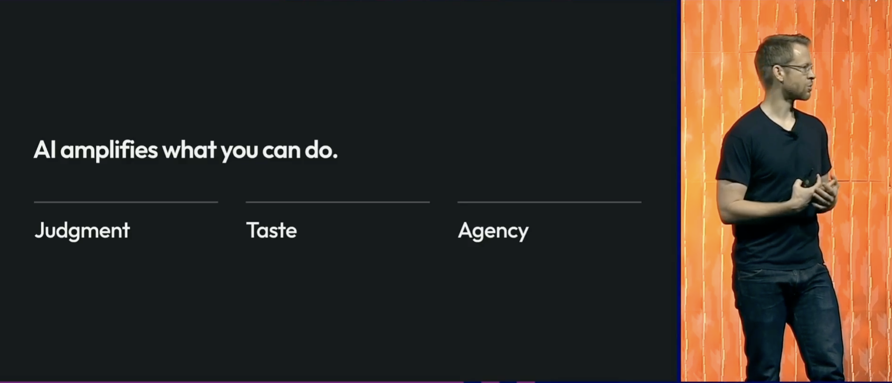
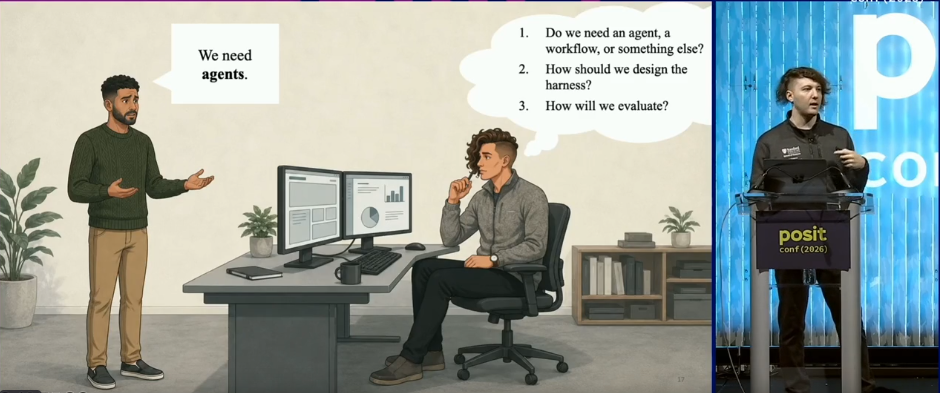
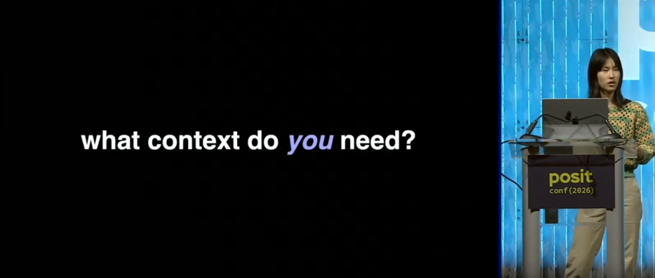
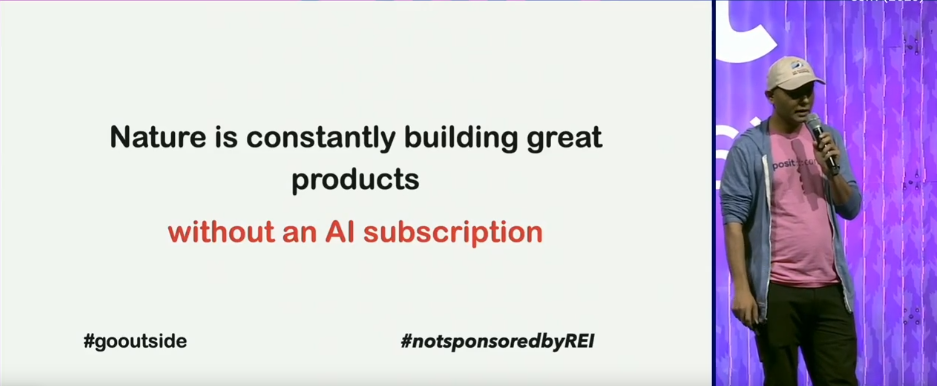
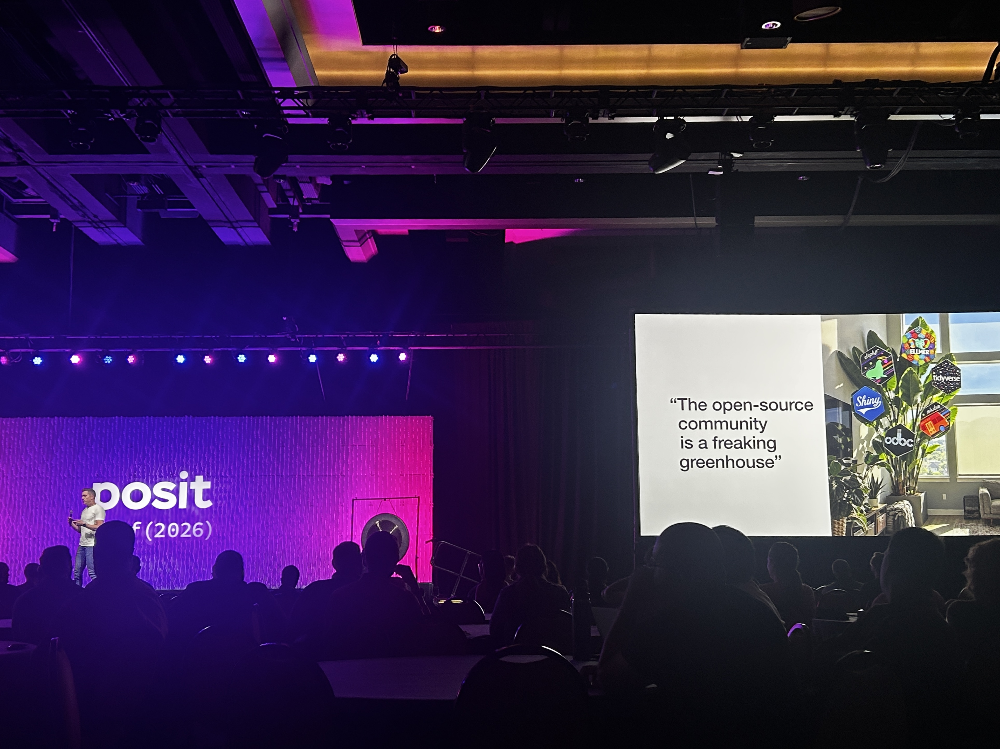
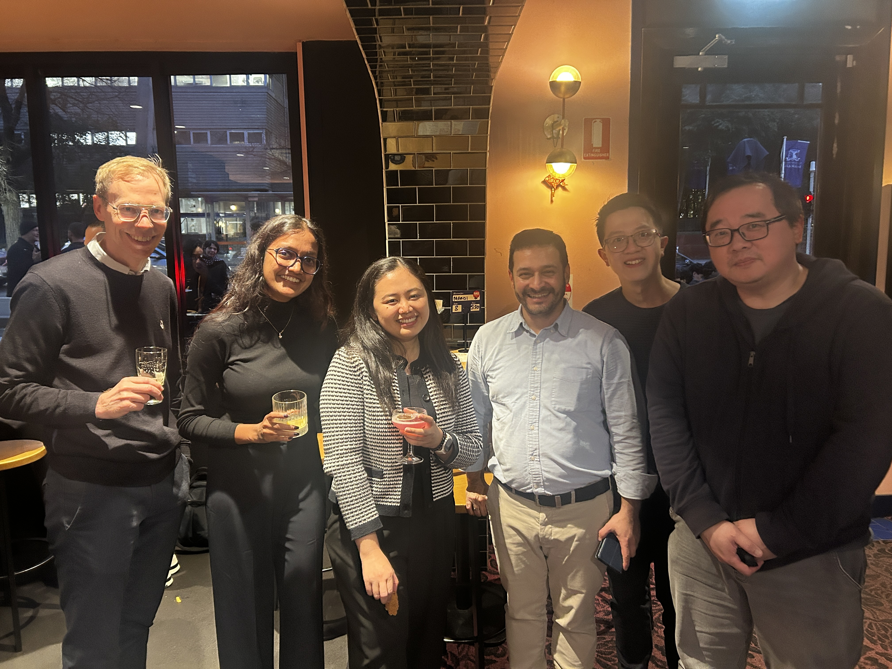

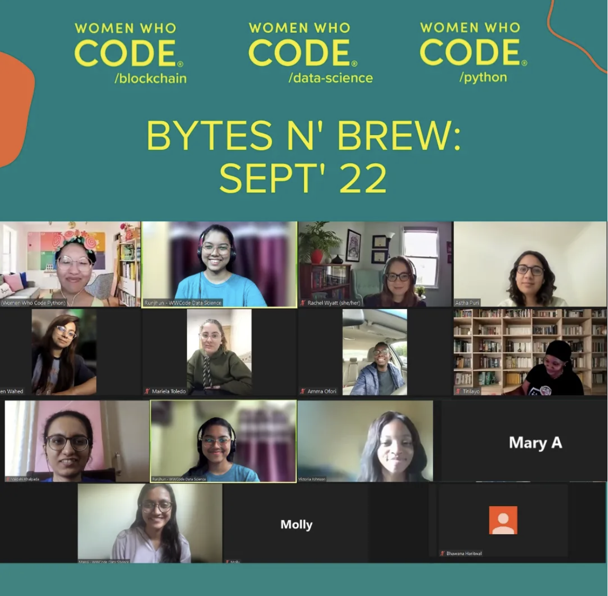
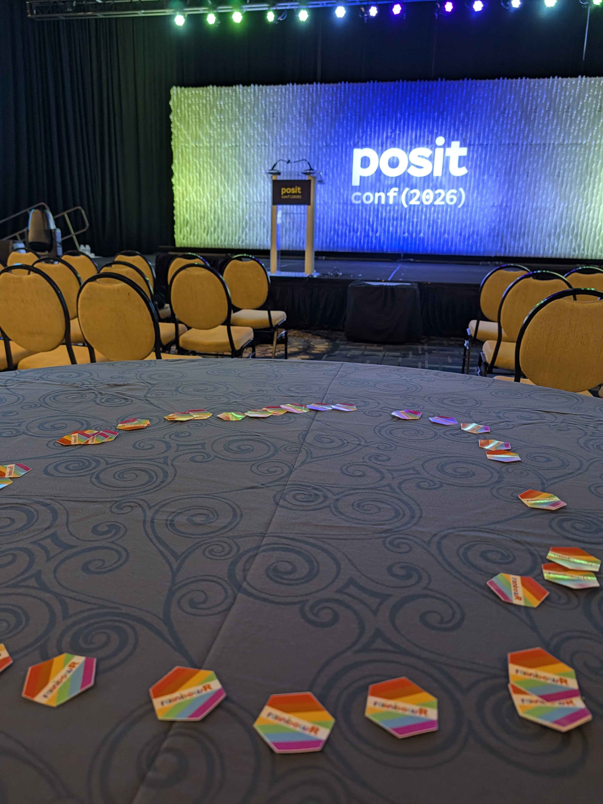
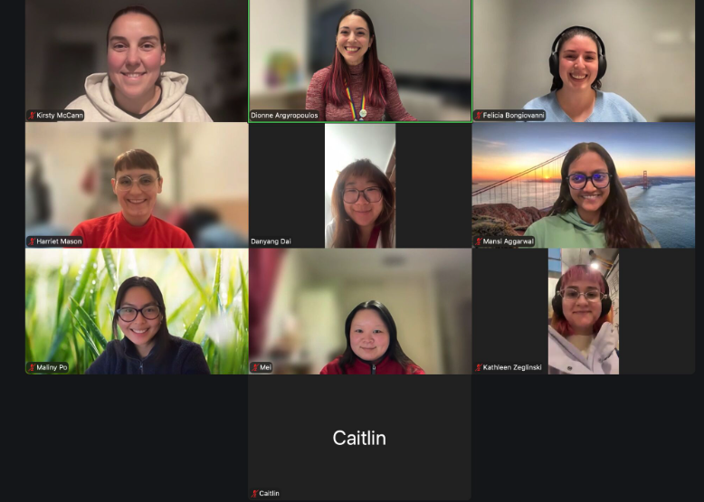
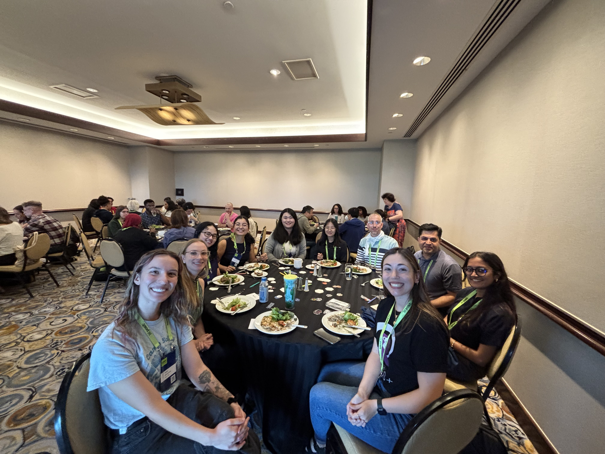
Consumption vs Creation
Consuming
Talks, docs, packages, other people’s code
How I learn
Creating
Contributing, writing, sharing back
How I can give back
I want to strike a balance between the two, and I’m more inspired to contribute more to the open source community!
- Stay curious, stay critical – it’s OK to be a skeptic, but engage thoughtfully with AI
- Own the problem – the clearer your problem statement, the more useful AI becomes
- Keep the human in the loop – human expertise is what makes AI output trustworthy
- Give back – share what you learn: blog it, talk about it, contribute to a package
- Find your people – communities like R-Ladies+ are where the creating starts 💜
Advice for Opportunity Scholars 2027
- Be active in your R communities
- Make a website!
- Join R/Tidy Dev Days, Data Hangouts, Hackathons
- Compile a list of your R skills
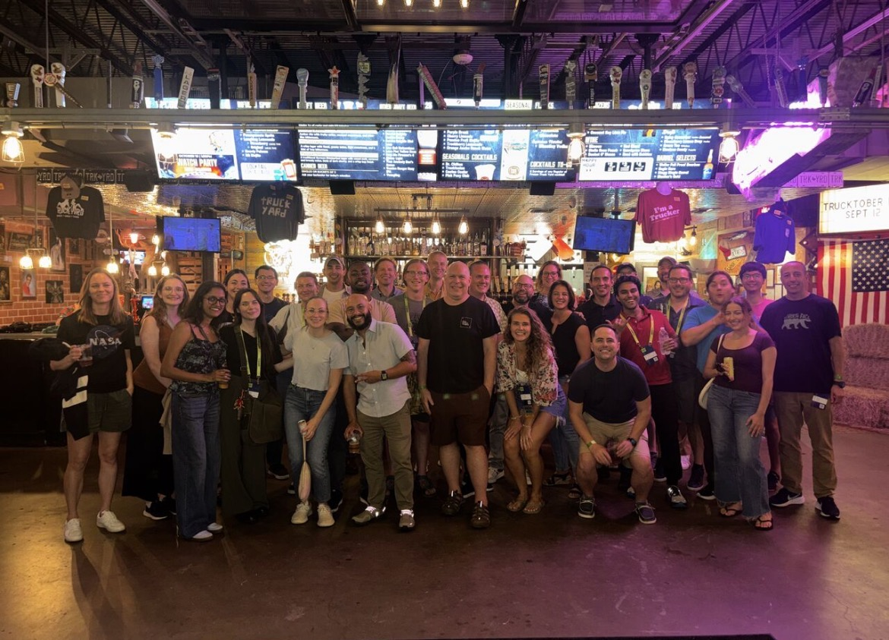
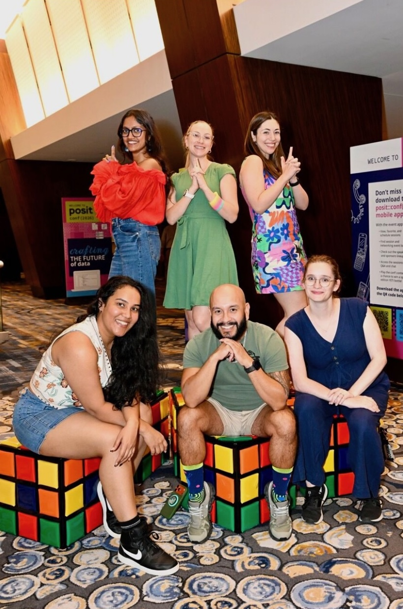
posit::conf(2026) %>% glimpse(questions = "?")


R-Ladies+ Melbourne | rladies.org